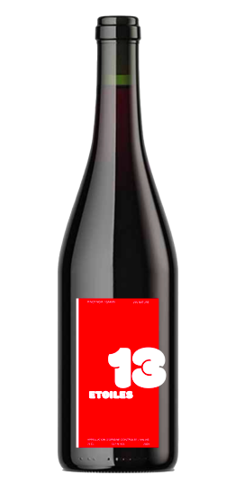

Le Pinot Noir / Gamay du Valais est un vin rouge léger et fruité aux arômes de cerise, de framboise et de fines épices. Soyeux et frais en bouche, il reflète l'élégance du terroir valaisan. Idéal avec des volailles, des charcuteries ou des fromages doux, il incarne l’harmonie et la générosité des coteaux alpins.
PINOT NOIR / GAMAY

VIN NATURE
VALAIS
2024
13,7 % VOL
75 CL
AJOUTER AU PANIER
CÉPAGE
PINOT NOIR / GAMAY
MILÉSIME ACTUEL
2024
PREMIER MILÉSIME
2001
PROVENANCE
VALAIS
VINIFICATION
18 MOIS
TEMPÉRATURE DE SERVICE
12-14° C
POTENTIEL DE GARDE
2-8 ANS
NOTES DE DÉGUSTATION
ÉLÉGANT ET FRUITÉ


Savourez l’art du vin : réservez votre dégustation pour une expérience inoubliable.
RÉSERVER UNE DÉGUSTATION